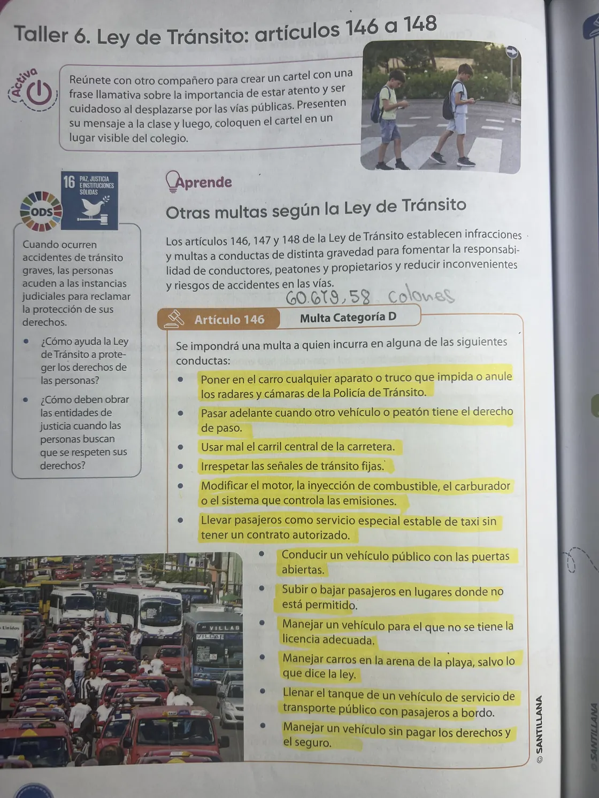
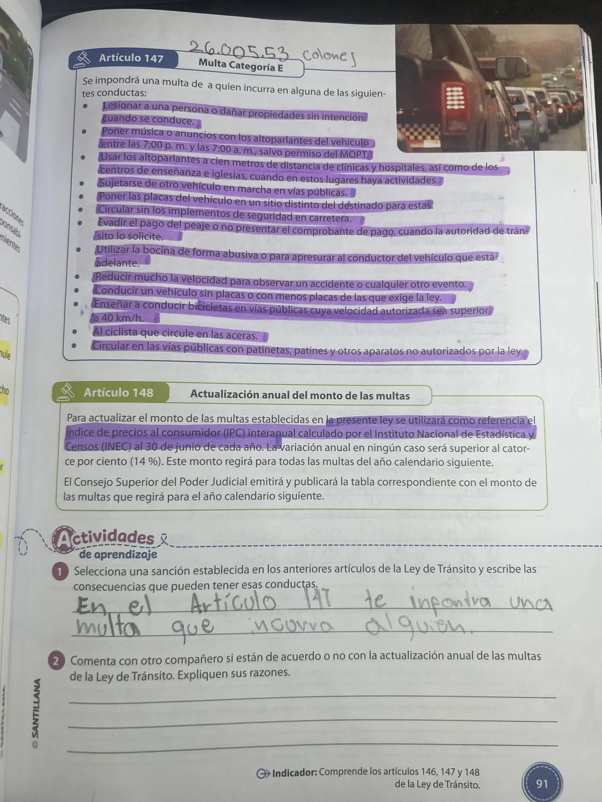
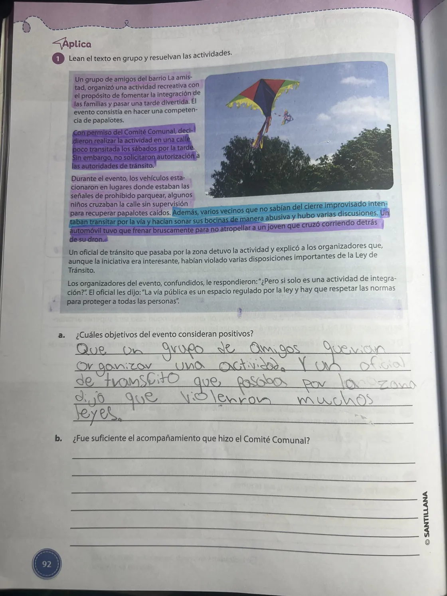
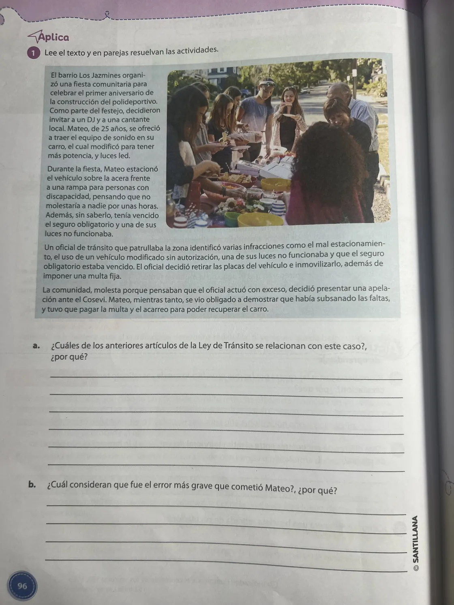
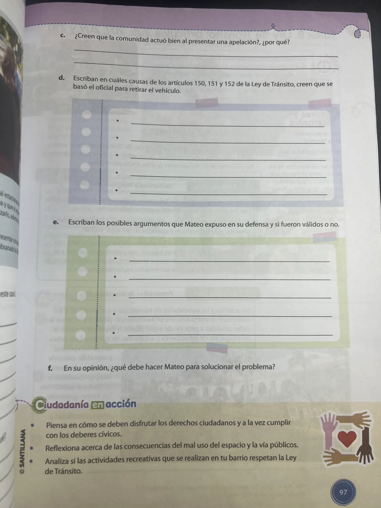
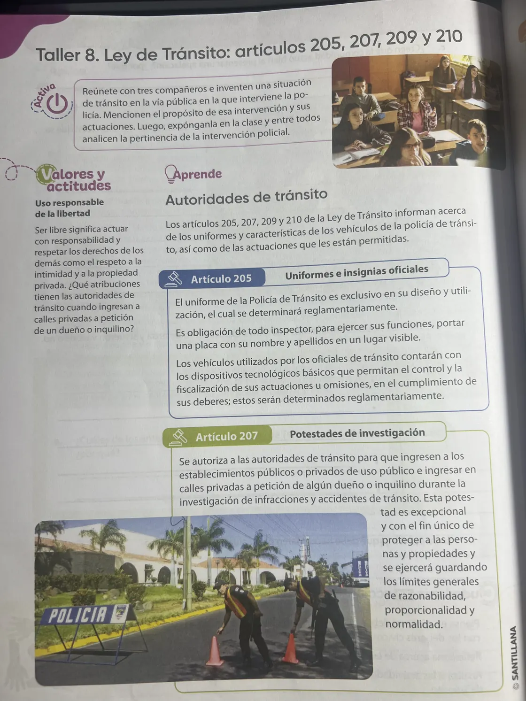
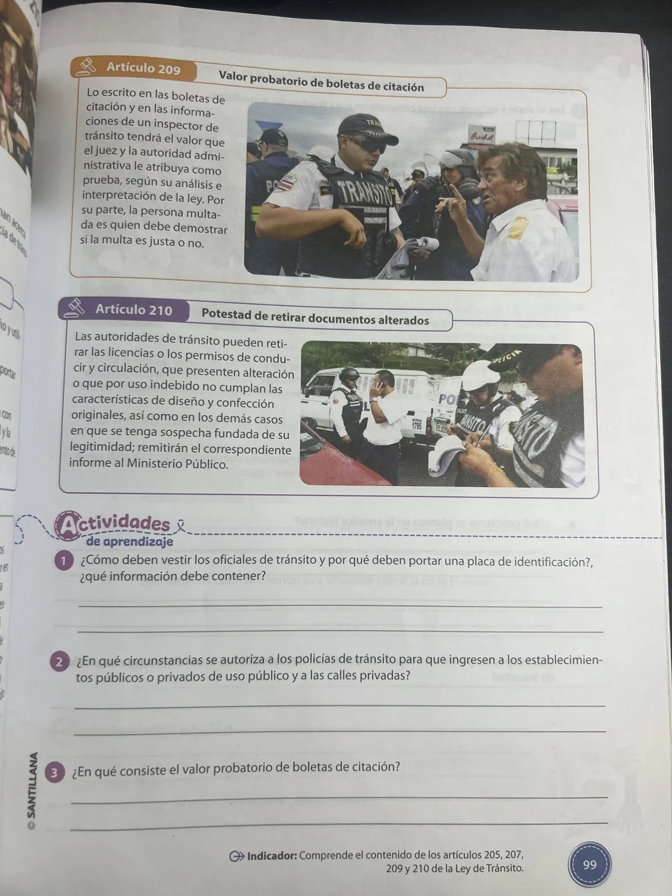
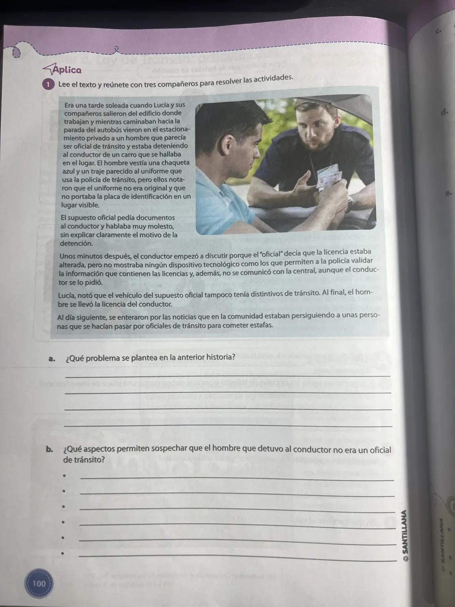
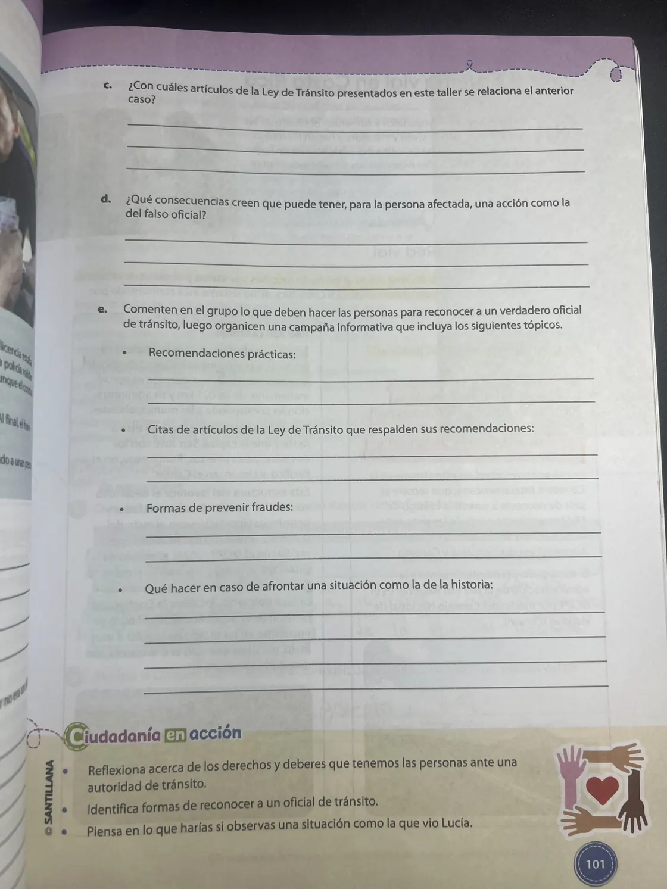

Antes de empezar
Preparáte con una ruta corta
Las fotos muestran los talleres 6, 7 y 8 del libro y las páginas 90–101. Estudiá el propósito de cada artículo, practicá con los casos y explicá tus respuestas con razones claras.
1 · Entendé
Relacioná cada artículo con la conducta o situación que regula.
2 · Compará
Diferenciá multa, retiro temporal, inmovilización y recuperación.
3 · Analizá
Buscá hechos, riesgos, normas relacionadas y posibles soluciones.
4 · Practicá
Contestá primero sin consultar la clave y después revisá qué podés mejorar.
Taller 6 · Páginas 90–93
Artículos 146, 147 y 148: infracciones y multas
En el libro, los artículos 146 y 147 presentan conductas que reciben multas de categorías distintas. El artículo 148 explica cómo se actualizan los montos.
Incluye conductas como interferir con radares o cámaras, irrespetar señales fijas, usar mal el carril central, adelantar cuando otra persona tiene derecho de paso o conducir sin la licencia adecuada.
Incluye acciones como evadir peajes, usar la bocina de forma abusiva, circular sin implementos de seguridad, colocar placas de manera incorrecta o usar aceras para circular en bicicleta.
El libro explica que los montos se revisan cada año con referencia al índice de precios al consumidor y que se publica una tabla para el año siguiente.
Reconocé ejemplos de conductas peligrosas, ubicá el artículo que se estudió y explicá por qué la norma ayuda a reducir riesgos en la vía.
Ejemplos para clasificar
Impedir el funcionamiento de una cámara de tránsito y pasarle a un vehículo que tiene derecho de paso corresponden a ejemplos del artículo 146. Tocar la bocina para apurar a otra persona y evadir un peaje aparecen entre los ejemplos del artículo 147.
Taller 7 · Páginas 94–97
Artículos 150, 151 y 152: qué pasa con un vehículo
| Artículo | Idea principal | Para recordarlo |
|---|---|---|
| 150 | Retiro temporal del vehículo y traslado a un depósito autorizado en las situaciones que indica la ley. | El vehículo se retira de la vía y queda bajo custodia. |
| 151 | Inmovilización del vehículo cuando se retiran sus placas por ciertas causas, como problemas con requisitos obligatorios o condiciones que impiden circular con seguridad. | Sin placas, el vehículo queda inmovilizado. |
| 152 | Condiciones para devolver el vehículo o las placas; según el caso, pueden requerirse pago de multa, acarreo y custodia, o atender una apelación. | La recuperación ocurre después de cumplir los requisitos correspondientes. |
Taller 8 · Páginas 98–101
Artículos 205, 207, 209 y 210: autoridades de tránsito
| Artículo | Qué presenta el libro | Pregunta para estudiar |
|---|---|---|
| 205 · Uniformes e insignias | El uniforme oficial es exclusivo; el inspector debe portar una placa visible con su nombre y apellidos. Los vehículos oficiales cuentan con dispositivos para controlar y fiscalizar sus actuaciones. | ¿Qué señales ayudan a identificar a un oficial? |
| 207 · Investigación | Describe facultades para ingresar a lugares de uso público y, en los casos indicados, a calles privadas a solicitud de una persona propietaria o residente para investigar infracciones o accidentes. La intervención debe respetar límites de razonabilidad y proporcionalidad. | ¿Cuál es el propósito y cuáles son los límites de la intervención? |
| 209 · Boletas de citación | Lo escrito en la boleta y en los informes del inspector puede ser valorado como prueba por la autoridad correspondiente. El libro también indica que la persona multada puede demostrar por qué considera que la multa no es justa. | ¿Cómo puede valorar una autoridad una boleta y qué puede hacer la persona multada? |
| 210 · Documentos alterados | Permite retirar licencias o permisos de conducir o circulación alterados o con señales de uso indebido, e informar al Ministerio Público cuando corresponda. | ¿Qué puede pasar si un documento parece alterado? |
Identificá a un oficial con cuidado
El taller destaca el uniforme oficial, la identificación visible con nombre y apellidos y los dispositivos del vehículo policial. Si una situación te parece extraña, mantené la calma, buscá un lugar seguro y pedí apoyo a una persona adulta o a las autoridades. Evitá confrontar a alguien.
Práctica de análisis
Dos situaciones del libro
1 · Actividad comunitaria en la calle
Un barrio organiza una competencia de papalotes y cierra una vía sin coordinar con las autoridades de tránsito. Algunos carros quedan mal estacionados, niñas y niños cruzan sin supervisión y un vehículo frena de golpe para evitar atropellar a un joven.
Analizá: ¿qué objetivo era positivo?, ¿qué riesgos aparecieron?, ¿qué coordinaciones y medidas de seguridad hacían falta?
2 · Vehículo inmovilizado
Mateo estaciona sobre una rampa de acceso, conduce un vehículo modificado y sin seguro obligatorio vigente, y descubre que una luz no funciona. La autoridad retira las placas y el vehículo queda inmovilizado. La comunidad presenta una apelación.
Analizá: relacioná el caso con los artículos 150–152; distinguí las faltas, la medida aplicada y los pasos para recuperar el vehículo.
3 · Persona que se hace pasar por oficial
Una persona usa ropa parecida al uniforme, no lleva identificación visible, no muestra señales de un vehículo oficial y pide documentos sin explicar con claridad el motivo.
Analizá: usá los artículos 205, 207, 209 y 210 para separar señales de identificación, facultades, boletas e indicios de documentos alterados. No concluyás que alguien es oficial solo por la ropa.
Chequeo interactivo
Práctica rápida
Escogé una respuesta por pregunta y seleccioná Revisar respuestas. El avance queda guardado únicamente en este navegador.
Ver explicación de las respuestas
- El artículo 146 incluye interferir con radares y cámaras.
- El artículo 147 incluye el uso abusivo de la bocina.
- El artículo 148 trata la actualización anual de multas.
- El artículo 150 describe el retiro temporal del vehículo.
- El artículo 151 relaciona el retiro de placas con la inmovilización.
- El artículo 152 explica la devolución o recuperación según requisitos.
- El artículo 205 describe uniforme e identificación visibles.
- El artículo 207 trata facultades de investigación con límites.
- El artículo 209 aborda el valor probatorio de boletas e informes.
- El artículo 210 trata documentos alterados o de legitimidad dudosa.
Práctica para el cuaderno
Simulacro escrito
Contestá primero sin abrir la clave. Cuando terminés, revisá si explicaste el porqué de cada respuesta.
Clave de respuestas sugeridas
- 146 y 147 presentan infracciones con multas de categorías distintas; 148 explica la actualización anual de los montos.
- Ejemplos 146: interferir con radares o cámaras, irrespetar señales fijas o adelantar sin respetar el derecho de paso. Ejemplos 147: usar la bocina abusivamente, evadir un peaje o circular en bicicleta por la acera. Las normas buscan proteger a las personas y reducir riesgos.
- Retiro temporal: el vehículo se traslada a un depósito autorizado en los casos indicados. Inmovilización: se retiran las placas y el vehículo no puede circular.
- Depende del caso; puede ser necesario resolver la causa, pagar multas y costos de acarreo o custodia, o atender una apelación y cumplir los demás requisitos que explica el libro.
- El artículo 205 indica que el uniforme oficial es exclusivo y que el inspector porta una placa visible con su nombre y apellidos. Los vehículos oficiales cuentan con dispositivos para fiscalizar las actuaciones.
- El artículo 207 aborda ingreso a lugares de uso público y ciertas calles privadas a solicitud de una persona propietaria o residente para investigar infracciones o accidentes. La intervención tiene un propósito legal y debe respetar razonabilidad y proporcionalidad.
- Señales: uniforme no original, falta de placa visible con nombre, vehículo sin distintivos o ausencia de dispositivos. Acciones: mantener la calma, ir a un lugar seguro, solicitar ayuda de una persona adulta o comunicarse con las autoridades; evitar la confrontación.
- Riesgos posibles: tránsito no coordinado, vehículos bloqueando espacios, niñas y niños cruzando sin supervisión y un atropello. Medidas: coordinar con las autoridades, elegir un lugar seguro, establecer cierres autorizados, señalizar y organizar personas adultas para supervisar.
Fuente: libro de Cívica, talleres 6, 7 y 8, páginas 90–101, en las fotografías aportadas. Esta guía resume el material para estudiar; las instrucciones de trabajo grupal que aparecen en el libro no forman parte de las tareas del sitio.
Material de referencia
Fotos del libro en vertical
Las seis fotos que llegaron de lado se giraron para que cada página se lea de arriba hacia abajo. Tocá una imagen para ampliarla.











Lista antes del examen
¿Ya lo podés explicar sin leer?
- Reconozco ejemplos de los artículos 146 y 147.
- Explico qué actualiza el artículo 148.
- Diferencio retiro temporal, inmovilización y recuperación del vehículo.
- Relaciono cada artículo 205, 207, 209 y 210 con su tema.
- Analizo los casos con hechos y razones, sin confundir una sospecha con una prueba.
- Propongo medidas responsables para organizar actividades en vías públicas.